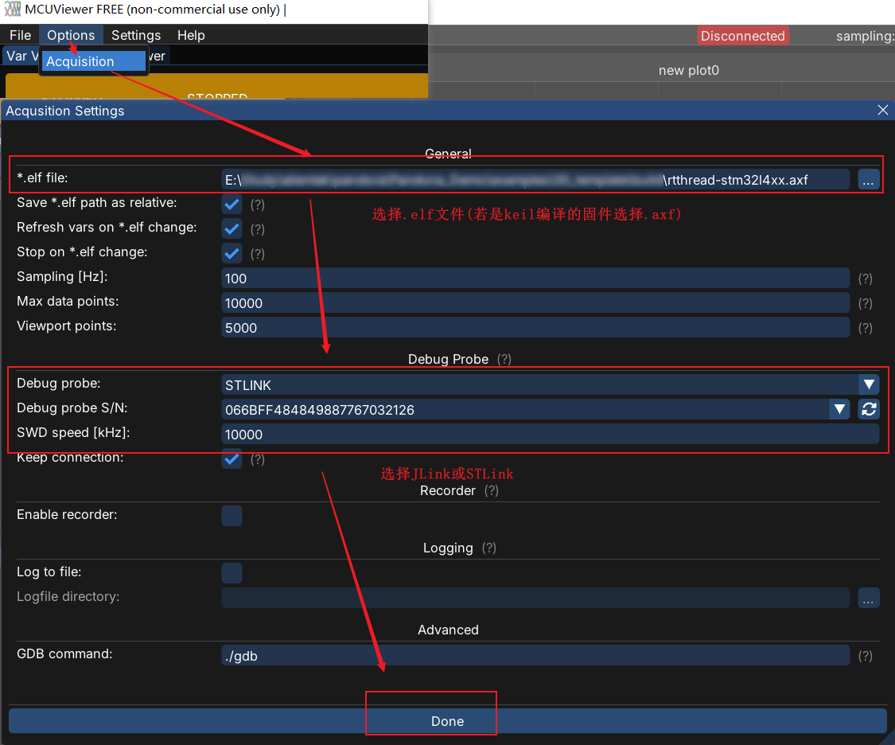
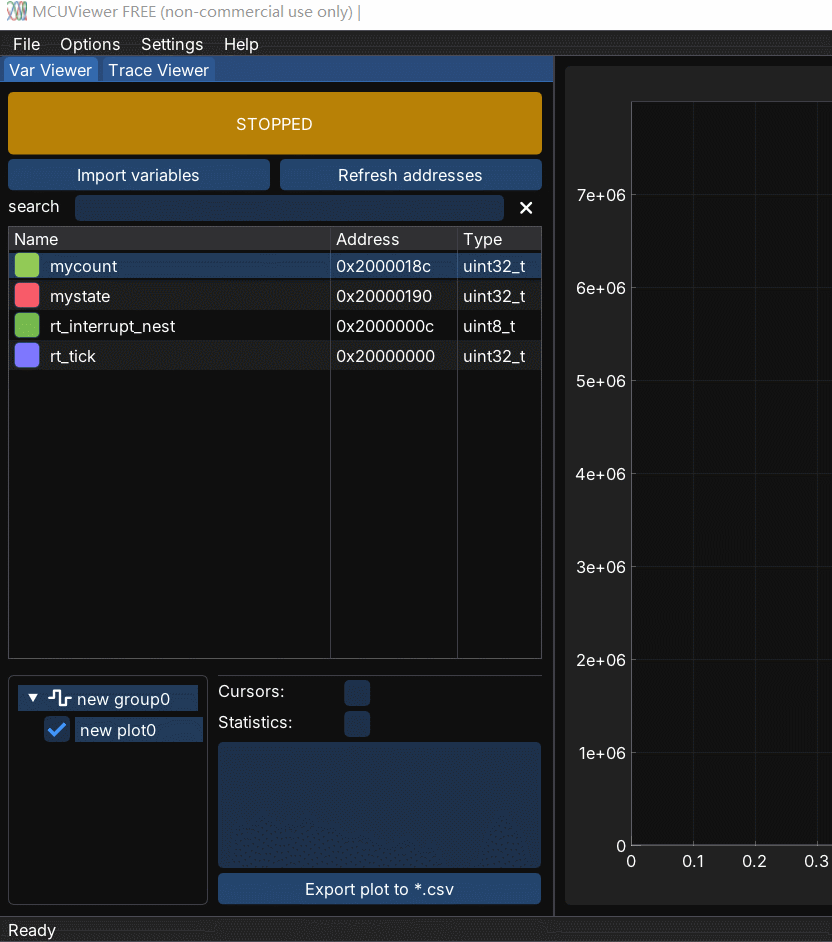
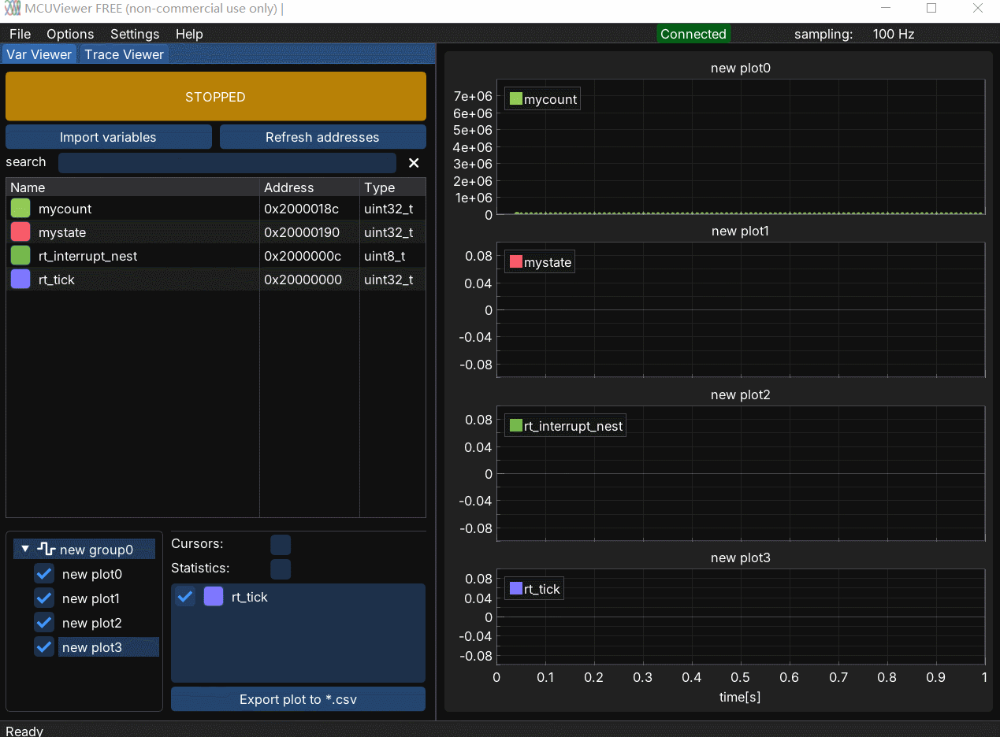

如何使用MCUViewer+STLink查看MCU变量波形
MCUViewer支持JLink和STLink。
1. 下载MCUViewer
进入MCUViewer下载。

对于windows，解压MCUViewer_Windows.zip并点击MCUViewer-x.x.x-win64.exe安装MCUViewer。
2. 编译并将固件通过JLink或STLink烧录到MCU中
3. 打开MCUViewer

4. 设置MCUViewer
按下图添加和MCU固件一同编译的.elf文件，并选择使用的仿真器，如STLink。

5. 在Var Viewer中添加需跟踪的变量
添加变量步骤如下图：

添加所有需跟踪的变量添加后，按Done返回主界面。

6. 将需跟踪的变量加入到图表中
将需跟踪的变量加入到单独的图表组中：

7. 按STOP按钮启动MCUViewer跟踪变量
